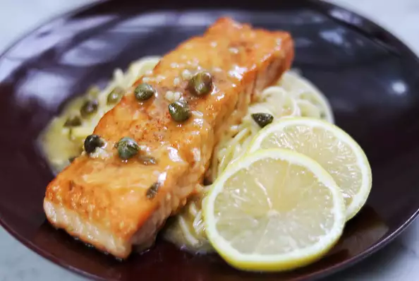

Back
Quick Salmon Piccata

Ingredients
- 4 (3 ounce) salmon fillets, skin removed
- Salt and ground black pepper to taste
- ¼ cup all-purpose flour
- 2 tablespoons vegetable oil
- ¼ cup dry white wine
- 1 teaspoon finely minced garlic
- ½ cup chicken broth
- 2 tablespoons lemon juice
- 1 tablespoon capers, drained
- 2 tablespoons butter
- ½ lemon, sliced
Steps
- Season salmon fillets with salt and pepper. Pour flour in a bowl and dredge salmon, shaking off the excess.
- Heat oil in a skillet over medium heat and cook salmon fillets until browned on both sides, about 3 minutes per side. Transfer to a plate and keep warm.
- Pour wine into the skillet and scrape browned bits from the bottom. Add garlic and cook until garlic is fragrant and slightly brown and liquid is reduced by half, about 1 minute.
- Add chicken broth, lemon juice, and capers. Bring to a boil while stirring. Stir in butter until melted.
- Return salmon fillets to skillet and spoon sauce over them.
- Cook, turning fillets once, until salmon is cooked through and flakes easily with a fork, about 4 minutes.
- Serve salmon with sauce poured over it and garnish with lemon slices.